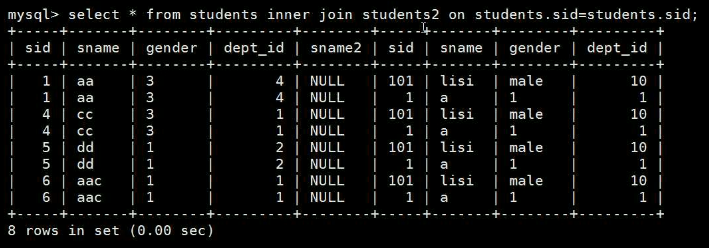
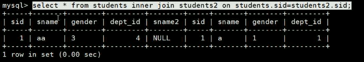
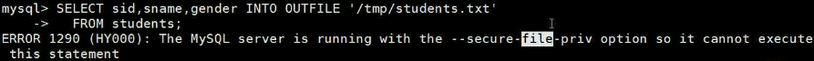

[toc]
Select
Syntax
13.2.10 SELECT Syntax
SELECT
[ALL | DISTINCT | DISTINCTROW ]
[HIGH_PRIORITY]
[STRAIGHT_JOIN]
[SQL_SMALL_RESULT] [SQL_BIG_RESULT] [SQL_BUFFER_RESULT]
SQL_NO_CACHE [SQL_CALC_FOUND_ROWS]
select_expr [, select_expr
...]
[FROM table_references
[PARTITION partition_list]
[WHERE where_condition]
[GROUP BY {col_name | expr | position}, ... [WITH ROLLUP]]
[HAVING where_condition]
[WINDOW window_name AS (window_spec)
[, window_name AS (window_spec)]
...]
[ORDER BY {col_name | expr | position}
[ASC | DESC], ... [WITH ROLLUP]]
[LIMIT {[offset,] row_count | row_count OFFSET offset}]
[INTO OUTFILE 'file_name'
[CHARACTER SET charset_name]
export_options
| INTO DUMPFILE 'file_name'
| INTO var_name [, var_name]]
[FOR {UPDATE | SHARE} [OF tbl_name [, tbl_name] ...] [NOWAIT | SKIP LOCKED]
| LOCK IN SHARE MODE]]
select
count(*),id ... group by id ;
count(*) group by id ;
排列的字段可比group by 的少，不可多。
having
group by ... having count(*)>{num};
order by ：列排序的方式
order by a asc,b;
order by a ,b asc;
inner join ... on ...


group by ...
- 分组
limit
- 前几条
- 第几条的后面开始读取，dao几几条
- 包括0，开始，从数字后面开始读。
distinct
- 去重。
select ... into ... from ...
- 将结果写到文件里面去。
- SELECT colum_name,... INTO OUTFILE '/local/path/file' FROM table_name,... where ...;
- 前提：my.cnf：secure_file_priv='/local/path/'

SELECT sid,sname,sex INTO OUTFILE '/tmp/students.txt'
FIELDS TERMINATED BY ',' -- 字段的分隔符
OPTIONALLY ENCLOSED BY '"' --
LINES TERMINATED BY '\n' -- 行结束符
FROM students;
inner join ... on
union [ all ]
- union all 不去重
- column_name 字段名字可以不一样，但要有意义。